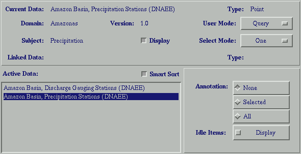

Geographic and tabular data objects are manipulated via the control panel. The menu bar along the top of the control panel is discussed in detail below. The top section allows the user to set a Meta Database filter based on subject and domain. The middle section displays the general properties (meta database name, data type, domain, subject, version and linked data name and type). These general properties were set in the Header Info; (under the File menu). This section also shows the control settings of the current data object. The Display control sets the data object visible in the 2DView window. The two pull down menus on the right determine the edit/query actions on the active data set and the direction of these edit/User Mode control determines the user action within the 2DView window. User Mode options vary with data type. Typical options are Query, Select, Add, Delete. It is important to note that User Mode options labeled with normal font do not alter the data object, while options labeled in italic alter the data object.
Select Mode options
Below the middle section are three toggle buttons - smart sort, display modes, and groups. Smart sort orders the display of datasets from back to front - grids, polgon, line, point. Toggling between the Display modes and Groups buttons to the right of Smart Sort changes the panel on the lower right. The Display modes panel is different for each data type and allows the user to specify the display variables such as color, annotation, layers, etc. To change symbol color: access the Edit->Symbol Field and Edit->Symbols menus. For networks the Idle Items toggle is for display of active networks when working with a potential network data set. The Groups panel is used when working with tables, and shows lists of groups specified. Groups should only be used with finalized data sets. Changing the number of records may change the groupings.
The lower left panel is the list of data sets open in the session. The highlighted data set is active and any changes made will be made to the active data set.
|  |